Daten aus einer Datenbank für die Analyse importieren
Zusammenfassung
 |
Die in diesem Tutorial verwendete Datenbank wurde auf Microsoft Azure eingerichtet.
|
Dieses Tutorial zeigt, wie Daten aus einer Datenbank in ein Origin-Arbeitsblatt mit Hilfe des SQL-Editors importiert werden. Danach werden einige Operationen wie Filter, Statistik etc. für die Daten durchgeführt, um das gewünschte Ergebnis für die grafische Darstellung zu erhalten.
Das Vorgehen basiert auf Origin 2023b.
Was Sie lernen werden
Dieses Tutorial zeigt Ihnen, wie Sie:
- zwei SQL-Abfragen der gleichen Datenbank in zwei Blätter einer Arbeitsmappe mit Hilfe des SQL-Editors importieren.
- den Datenfilter auf die Arbeitsblattdaten anwenden,
- deskriptive Spaltenstatistik durchführen,
- Diagramme wie Säulendiagramme etc. erstellen.
Schritte
Daten aus einer Datenbank importieren
- Öffnen Sie ein neues Projekt. Wählen Sie im Menü Daten: Mit Datenbank verbinden: Neu... oder klicken Sie auf die Schaltfläche SQL-Editor öffnen auf der Symbolleiste Datenbankzugriff.

- Wählen Sie die Option Verbindungszeichenkette aus und klicken Sie auf OK. Fügen Sie die Verbindungszeichenkette unten ein.
Driver={SQL Server}; Server=olab.DATABASE.windows.net; Port=1433; DATABASE=sample1; Uid=Olabts; Pwd=Origin@2024;
Wenn Sie ODBC Drive 18 for SQL Server benutzen, verwenden Sie
Driver={ODBC Driver 18 FOR SQL Server}; Server=olab.DATABASE.windows.net; Port=1433; DATABASE=sample1; Uid=Olabts; Pwd=Origin@2024;;
- Klicken Sie auf die Schaltfläche Test, um zu prüfen, ob die Verbindung in Ordnung ist. Wenn er in Ordnung ist, klicken Sie auf die Schaltfläche OK, um die Verbindung zur Datenbank herzustellen.
- Klicken Sie im linken Bedienfeld doppelt auf den Knoten SalesLT.Product. Rechts wird dann select * from SalesLT.Product gezeigt.
-
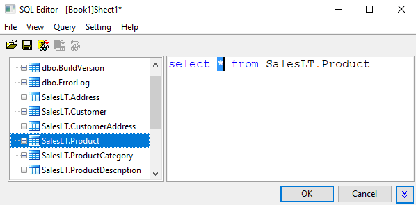
- Klicken Sie auf die Schaltfläche Vorschau der Ergebnisdaten
 , um die Daten im unteren Bedienfeld anzuzeigen.
, um die Daten im unteren Bedienfeld anzuzeigen.
- Klicken Sie auf die Schaltfläche OK, um die Daten in das aktive Arbeitsblatt zu importieren.
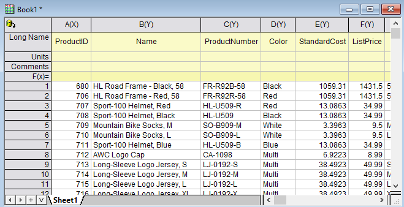
- Um Daten, die auf einer anderen SQL-Abfrage aus der gleichen Datenbank basieren, in ein neues Blatt zu importieren, klicken Sie mit der rechten Maustaste auf den Blattreiter und wählen Sie Blatt ohne Daten duplizieren.
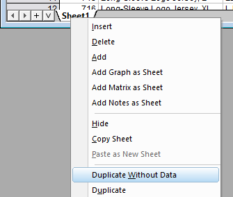
- Klicken Sie in Sheet2 auf
 und wählen Sie den SQL-Editor ...
und wählen Sie den SQL-Editor ...
- Wählen Sie Anfrage: LabTalk..., um den Dialog Einstellungen der Unterstützung von LabTalk zu öffnen. Aktivieren Sie das Kontrollkästchen Substitution durch LabTalk (%, $) aktivieren und geben Sie folgendes Skript in das Textfeld ein.
int cate=1;
Der Dialog sieht folgendermaßen aus:
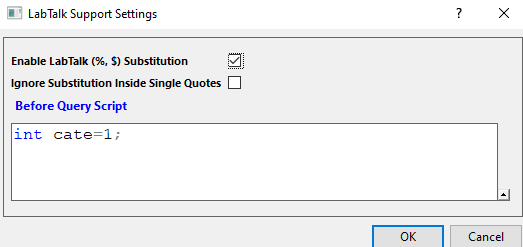
- Klicken Sie auf OK, um zum SQL-Editor zurückzukehren. Geben Sie dann das folgende SQL-Skript in das obere rechte Bedienfeld ein. Diese SQL fragt zwei Spalte aus der Datenbank ab, eine ist der Kategoriename des Produkts, die andere ist die Summe von LineTotalfor jeder Kategorie in Parent Category 1.
SELECT SalesLT.ProductCategory.Name, SUM(SALEANDPRODUCT.LineTotal) AS LineTotal FROM (SELECT SALEINFO.LineTotal, PRODUCTINFO.ProductCategoryID FROM (SELECT SalesLT.SalesOrderHeader.OrderDate, SalesLT.SalesOrderDetail.LineTotal, SalesLT.SalesOrderDetail.ProductID FROM SalesLT.SalesOrderHeader INNER JOIN SalesLT.SalesOrderDetail ON SalesLT.SalesOrderHeader.SalesOrderID=SalesLT.SalesOrderDetail.SalesOrderID) AS SALEINFO INNER JOIN (SELECT SalesLT.Product.ProductID, SalesLT.Product.ProductCategoryID FROM SalesLT.Product) AS PRODUCTINFO ON SALEINFO.ProductID=PRODUCTINFO.ProductID) AS SALEANDPRODUCT INNER JOIN SalesLT.ProductCategory ON SALEANDPRODUCT.ProductCategoryID=SalesLT.ProductCategory.ProductCategoryID WHERE SalesLT.ProductCategory.ParentProductCategoryID = $(cate) GROUP BY SalesLT.ProductCategory.Name ORDER BY LineTotal
- Klicken Sie auf die letzte Schaltfläche
 , um das Skript der SQL-Anfrage mit substituierten Variablen anzuzeigen. Klicken Sie auf die Schaltfläche Vorschau der Ergebnisdaten , um die Daten im unteren Bedienfeld anzuzeigen.
, um das Skript der SQL-Anfrage mit substituierten Variablen anzuzeigen. Klicken Sie auf die Schaltfläche Vorschau der Ergebnisdaten , um die Daten im unteren Bedienfeld anzuzeigen.
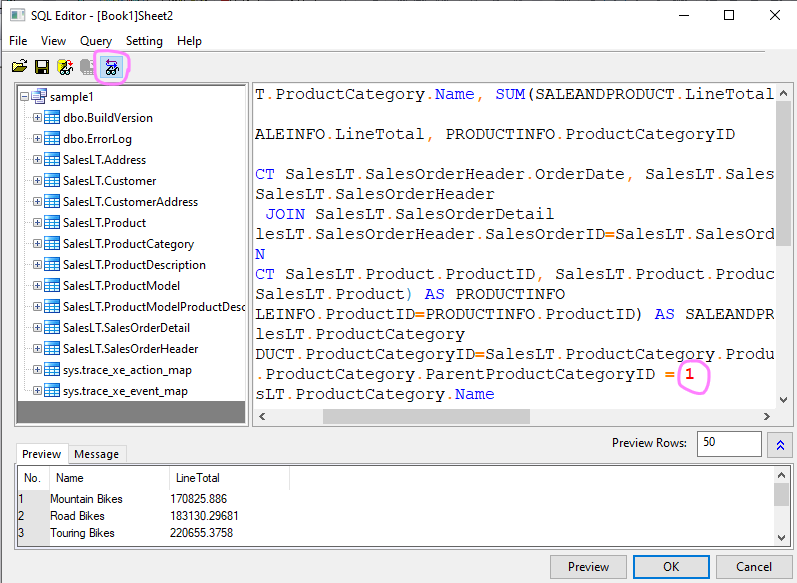
- Bevor Sie den Dialog schließen, wählen Sie Datei: Verbindung und Anfrage speichern unter ... Speichern Sie sie als LineTotal_by_parentCategory.ODQ.
- Klicken Sie auf OK. Das Abfrageergebnis wird in Sheet2 gezeigt.
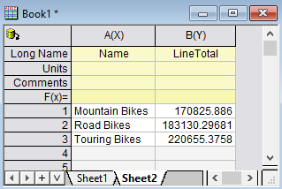
Datenfilter und Statistik
- Anstatt SUM(), INNER JION, GROUP BY zu verwenden, um zu den Statistiken zu gelangen, können Sie als Erstes eine einfache Abfrage durchführen und die Spalten importieren, für die Sie sich interessieren. Danach verwenden Sie Origins Filter und Statistiken etc., um das gewünschte Ergebnis und Grafik zu erhalten.
- Öffnen Sie dieses Mal eine neue Mappe. Zum Beispiel Book2.
- Wählen Sie Daten: Mit Datebank verbinden im Menü und wählen Sie LineTotal_by_parentCategory.ODQ aus.
- Ersetzen Sie die rechte Seite mit der folgenden Abfrage, mit der mehrere Tabellen zusammengefügt und 3 Spalten abgefragt werden: Category Name, ParentCategoryID und LineTotal.
SELECT SalesLT.ProductCategory.Name ,SalesLT.ProductCategory.ParentProductCategoryID, SalesLT.SalesOrderDetail.LineTotal FROM SalesLT.SalesOrderDetail INNER JOIN SalesLT.Product ON SalesLT.SalesOrderDetail.productID = SalesLT.Product.ProductID INNER JOIN SalesLT.ProductCategory ON SalesLT.Product.ProductCategoryID = SalesLT.ProductCategory.ProductCategoryID ORDER BY SalesLT.ProductCategory.ProductCategoryID
- Markieren Sie Spalte B (Langname ist ParentProductCategoryID) und fügen Sie dann einen Datenfilter zu dieser Spalte hinzu, indem Sie auf die Schaltfläche Datenfilter hinzufügen/entfernen auf der Symbolleiste Worksheet-Daten klicken.

- Ein Filtersymbol wird in der oberen linken Ecke des Spaltenkopfes angezeigt. Klicken Sie darauf und wählen Sie dann im Kontextmenü Ist gleich ....
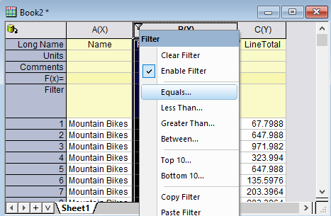
- Ein Dialog wird geöffnet. Behalten Sie den Standard-Wert mit 0 und klicken Sie auf OK.
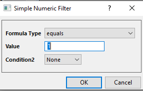
- Markieren Sie Spalte C (LineTotal) und wählen Sie dann im Menü Statistik: Deskriptive Statistik: Spaltenstatistik, um den Dialog Spaltenstatistik zu öffnen.
- Setzen Sie in dem aufgerufenen Dialog Spalte B als den Gruppierungsbereich. Sie können auf die dreieckige Schaltfläche klicken, um die Spalte aus der Liste auf der rechten Seite auszuwählen.
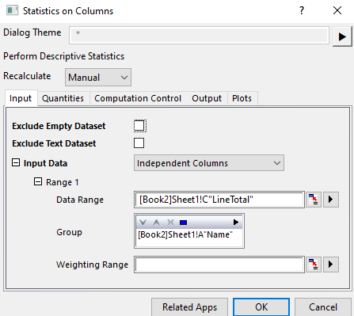
- Aktivieren Sie auf der Registerkarte Diagramme das Kontrollkästchen Boxdiagramme.
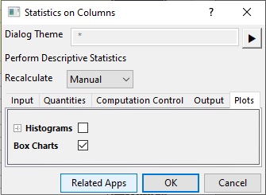
- Klicken Sie auf die Schaltfläche OK, um die Ergebnisse zu erzeugen.
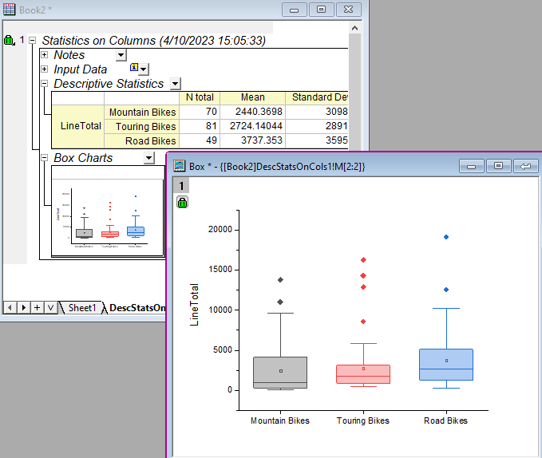
- Es ist sehr einfach, die Filterbedingung zu ändern und aktualisierte Statistiken zu erhalten. Gehen Sie z. B. zurück zu Sheet1. Klicken Sie doppelt auf =1 und ändern Sie es in =2.
- Gehen Sie zum Blatt DescStatsOnCol1. Das Neuberechnungsschloss wird gelb, was bedeutet, dass die Eingabe sich geändert hat. Klicken Sie darauf und wählen Sie Neuberechnen. Jetzt wird das LineTotal von allen Produkten in parentCategoryID=2 gezeigt.
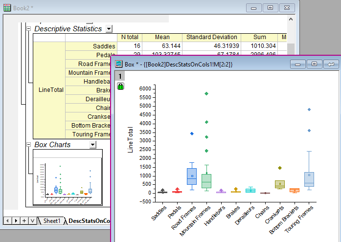
 |
Sie können auf das Neuberechnungsschloss klicken und den Neuberechnungsmodus auf Auto setzen. Wenn die Quelldaten oder der Filter sich ändern, wird das Statistikergebnis automatisch aktualisiert.
|
Radardiagramm
- Das Hilfsmittel Spaltenstatistik erzeugt auch ein Ergebnisblatt, das Sie für weitere Analysen oder grafische Darstellungen nutzen können.
- Gehen Sie zum Blatt DescStatsQuantities1.
- Markieren Sie Spalte F (Sum) und wählen Sie im Menü Zeichnen: Spezialisiert: Radar, um ein Radardiagramm zu erstellen.
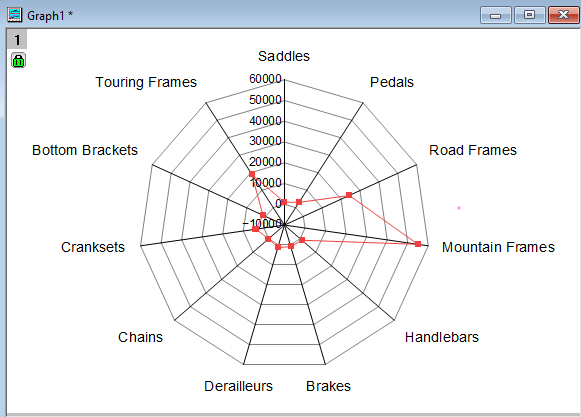
- Kehren Sie zum Blatt DescStatsQuantities1 zurück, fügen Sie einen Filter zu Spalte B (Name) hinzu und schließen Sie Mountain Frames, Road Frames und Touring Frames aus. Skalieren Sie die Achse neu, um mehr Einzelheiten zu den Produkten mit kleineren Summenwerten von LineTotal zu sehen.
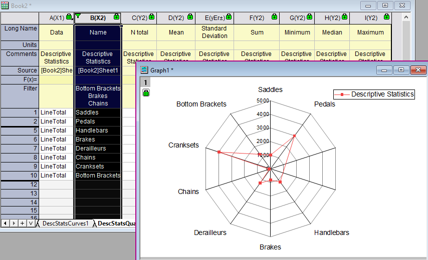